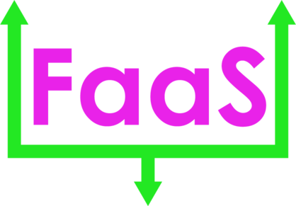

Forklift-as-a-Service
v1.0.0 Early Development Alpha Build

A cloud native agile infrastructure SaaS and potentially PaaS offering that allows for the creation of AI-guided P2P learning classrooms, designed to be a virtual space as well as integrated into IRL spaces such as Maker Spaces in order to drive a highly crowdlearning experience, with the goal of creating both virtual and physical shared-learning spaces that allows people to obtain the knowledge to ace certifications, or to obtain simpler certifications such as forklift operations that are not otherwise offered as P2P learning platforms. PaaS service would allow one to deploy App Engine offerings to further drive the P2P learning experience within classrooms.
The Radisys application would facilitate this learning process by providing the basis for the P2P rooms, as well as the TTS mechanisms necessary to feed into conversational AI such as ChatGPT or Bard, which would provide a natural language basis for an on call teacher of specific subjects.